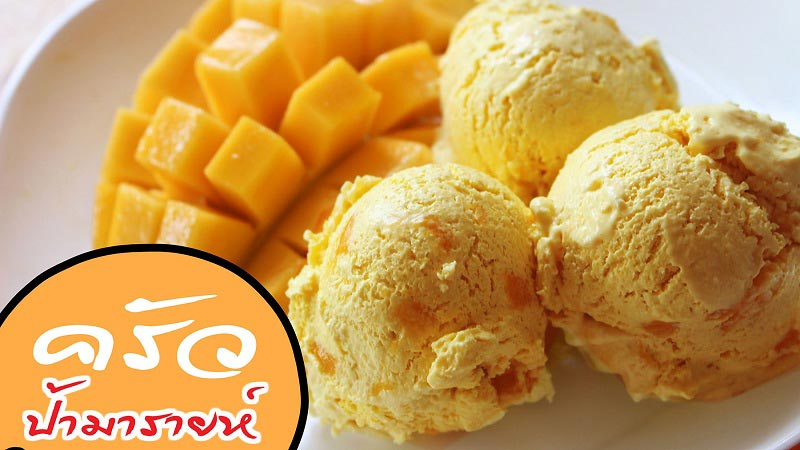
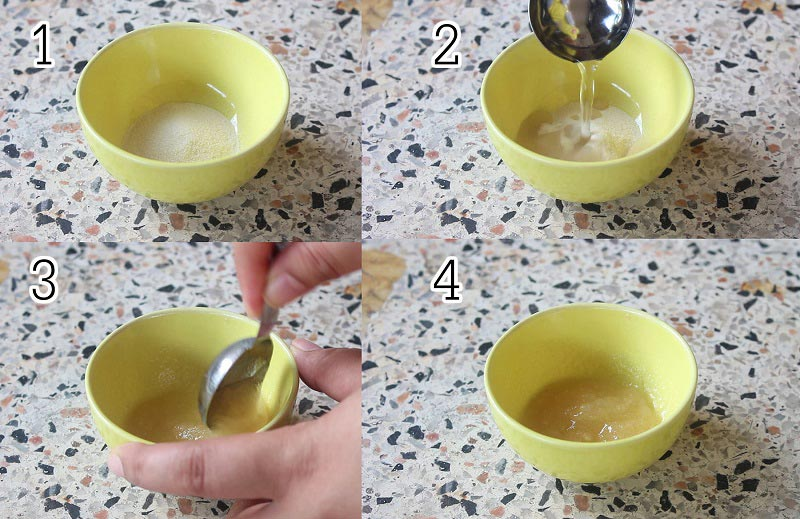
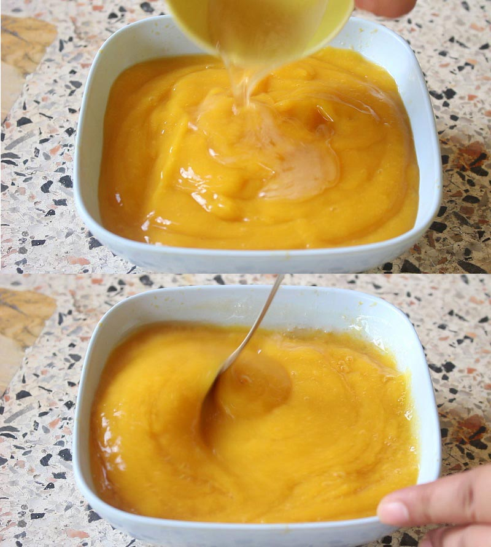
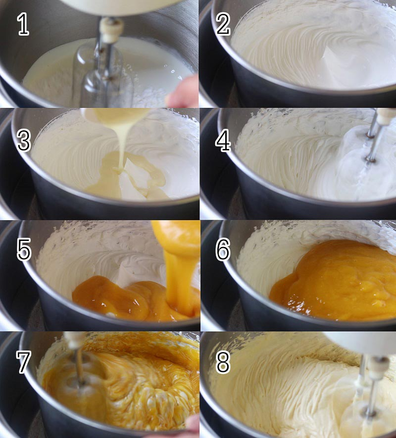
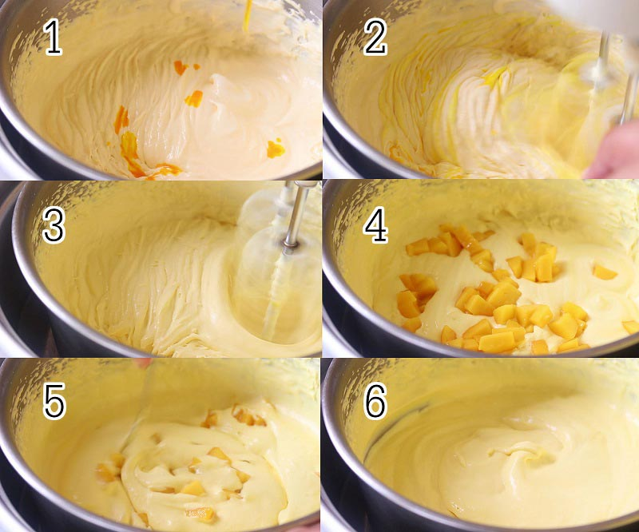
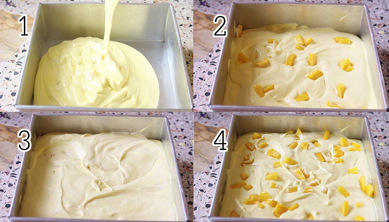
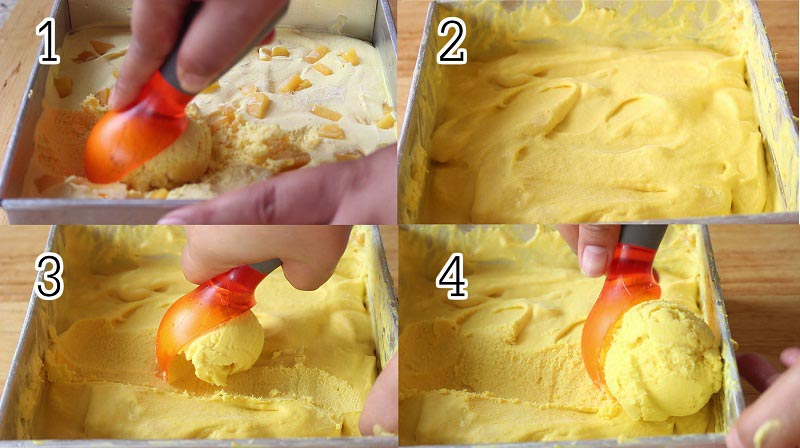
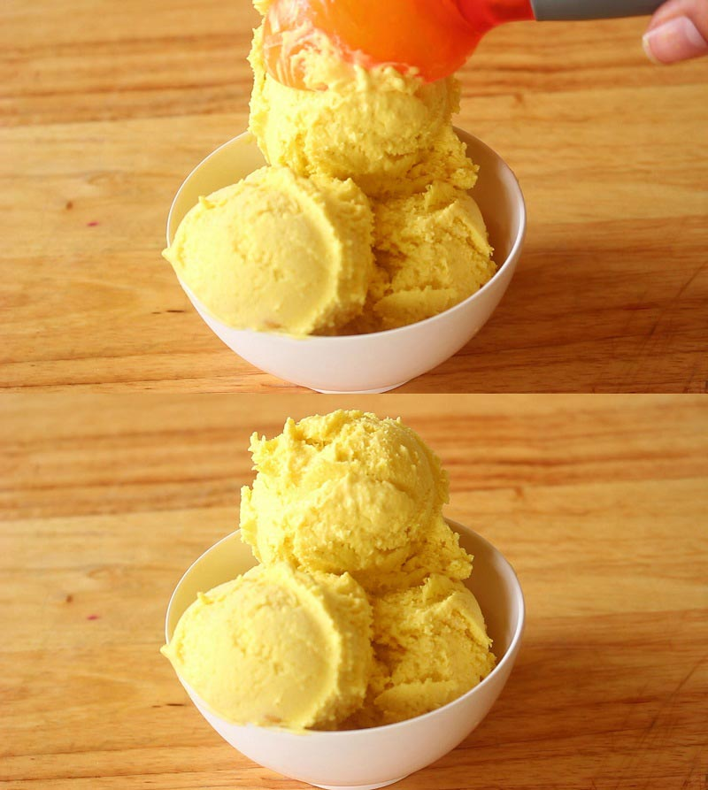
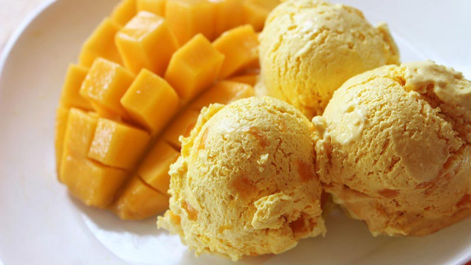
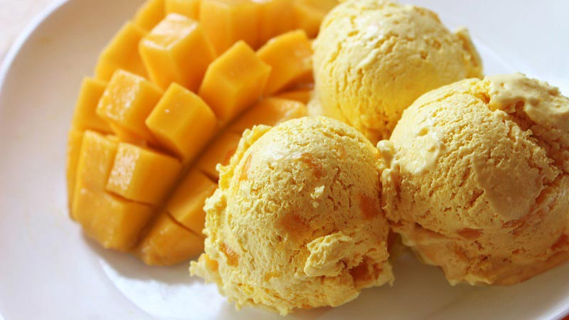

ไอศกรีมมะม่วง 1 ลูก ให้พลังงานประมาณ 227 กิโลแคลอรีเคยไหมที่ทำไอศกรีมมะม่วง แล้วเจอปัญหาไอศกรีมเป็นเกล็ดน้ำแข็งตักไม่ออก ต้องใช้ช้อนขูดจนเจ็บมือ ใครอยากลองแก้ตัวเชิญเลยค่ะ กระปุกดอทคอมขอนำเสนอวิธีทำไอศกรีมมะม่วง (Mango Ice Cream) สูตรจาก <ครัวป้ามารายห์ ไอศกรีมสีสวยแซมเนื้อมะม่วงรสสัมผัสเนียนนุ่มหวานหอม ไม่เป็นเกล็ดน้ำแข็ง ไม่ต้องพึ่งพาเครื่องทำไอศกรีมด้วยนะคะ อยากรู้เลื่อนลงไปดูกัน

ผสมเจลาตินกับน้ำคนให้เข้ากันแล้วพักไว้ 10 นาที
พอพักเจลาตินครบ 10 นาที ก็นำเข้าไมโครเวฟประมาณ 10-20 วินาที แล้วก็นำไปผสมกับเนื้อมะม่วงปั่น อาจจะตักเนื้อมะม่วงปั่นมาผสมในถ้วยเจลาตินก่อน คนให้เข้ากัน แล้วค่อยนำไปเทรวมกันอีกทีจะได้คนเข้ากันง่าย ๆ ค่ะหมายเหตุ : สามารถนำมะม่วงหั่นเป็นสี่เหลี่ยมลูกเต๋าแล้วแช่ช่องฟรีซให้แข็งก่อนแล้วมาปั่นก่อนทำไอศกรีมมะม่วงได้ค่ะ (จะทำให้ไอศกรีมเซตตัวเร็วและเกล็ดน้ำแข็งเล็กด้วยค่ะ)

ตีวิปปิ้งครีมกับน้ำตาลไอซิ่งจนตั้งยอดอ่อน เติมนมข้นหวานลงไป ตีจนเข้ากัน แล้วเทเนื้อมะม่วงปั่นที่ผสมเจลาตินไว้แล้ว ลงไปตีผสมด้วยหมายเหตุ : ถ้าไม่มีตีเครื่องมือถือ สามารถใช้เครื่องปั่น ปั่นรวมส่วนผสมทั้งหมดเข้าด้วยกันได้ค่ะ

ถ้าอยากได้สีเหลืองสวย ๆ ก็สามารถเติมสีเหลืองเพิ่มได้ค่ะ ตีจนเข้ากันแล้วใส่เนื้อมะม่วงลงไปตะล่อมจนเข้ากัน
เทใส่ภาชนะที่เตรียมไว้ จะใส่เนื้อมะม่วงลงไปอีกก็ได้ค่ะ จากนั้นแช่ไอศกรีมในช่องแช่แข็งประมาณ 10 ชั่วโมง (คือแช่ช่องฟรีซทิ้งไว้ค้างคืนไปเลยค่ะ) 
หลังจากที่เซตตัว (จะตักกินสักรอบแบบป้าก็ได้นะคะ) ตักออกมาหั่นเป็นชิ้นเล็ก ๆ เป็นสี่เหลี่ยมลูกเต๋าก็ได้ค่ะ ต้องรีบทำหน่อยนะคะ อย่าให้ไอศกรีมละลาย เดี๋ยวจะกลับไปเป็นเกล็ดเหมือนเดิม นำมาปั่นจนละเอียดขึ้น ถ้ามีเครื่องปั่นกำลังสูงหน่อยจะดีมากค่ะ เพราะไอศกรีมจะค่อนข้างหนืด ทำให้มอเตอร์ไหม้ได้ พอปั่นแล้วก็นำไปแช่ช่องฟรีซอีก 5-8 ชั่วโมง หรือจนไอศกรีมเซตตัวแข็งขึ้น ทำแบบนี้อีกสัก 1-2 รอบ หรือจนเกล็ดน้ำแข็งเล็กลงและเนื้อไอศกรีมเนียนขึ้นค่ะ รูปแรกจะเป็นไอศกรีมที่พักให้เซตตัวรอบแรก รูปต่อไปก็คือครั้งที่ 2 ค่ะ

ถ้าได้เนื้อเนียนไอศกรีมเนื้อเนียน ๆ ดั่งใจแล้ว จะรออะไรคะ ตักเสิร์ฟกันได้เลยค่ะ
วิธีทำไอศกรีมมะม่วง
ขอขอบคุณข้อมูลและภาพประกอบจาก
ครัวป้ามารายห์
Copyright © EAT&EAT nc. สงวนลิขสิทธิ์